|
LinQT
1.0
A package for linear quantum transport
|
Introduction Systems described by a spin-dependent Hamiltonians, endows spins with dynamics. Typically, crystalline systems will posses spin-dependent fields which will make the spins to precess coherently. This is the case of external magnetic fields and spin-orbit coupling fields. However, in the presence of randomness, the spin-coherence is lost due to the irreversibility, making it relax over some relevant time scale 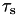 know as spin relaxation time.
To obtain the spin relaxation time it is sufficient to solve the Schrodinger equation:
![\[ i\hbar \frac{d}{dt}|\Psi(t)\rangle = H |\Psi\rangle \]](form_1.png)
where  the hamiltonian of the system,
the hamiltonian of the system,  the Planck's constant, and
the Planck's constant, and  the state of the system. Then, spin density is computed in the Heisenberg picture as
the state of the system. Then, spin density is computed in the Heisenberg picture as
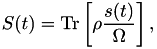
where $$ the density matrix, 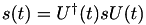 the time evolved spin operator, with  its static representation in the Schrodinger picture and 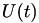 the time-evolution operator.
its static representation in the Schrodinger picture and 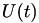 the time-evolution operator.
In LinQT we deal with tight-binding models of solids described by a time-independent Hamiltonian. Therefore, the evolution operator can be written simply as 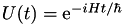, and the density matrix depends on the Fermi energy 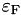. To compute the evolution of the spin density, we follow the approach done by [Cummings et. al][1], in which the density matrix takes the following form
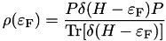
with 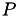 a projector operator. In [1], the projector operator is choosen such that spin density acts on spin polarizes in a given spatial dimension. If such spatial direction is described by an altitude angle 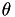 and a azimutal angle 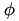, then the spinorial component of the projector operator takes the form of:
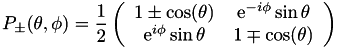
but an arbitrary operator can be choose.
The Chebyshev approach
We rewrite the expression by using the permutation property of the trace,
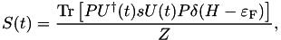
where we had defined 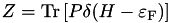. The trace is then approximate by a mean over a random phase vector
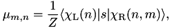
where 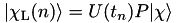 and 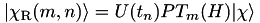
Finally, the The time evolution is computed in terms of the expansion moments as:
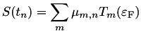
[1]: https://journals.aps.org/prl/abstract/10.1103/PhysRevLett.119.206601
 1.8.11
1.8.11